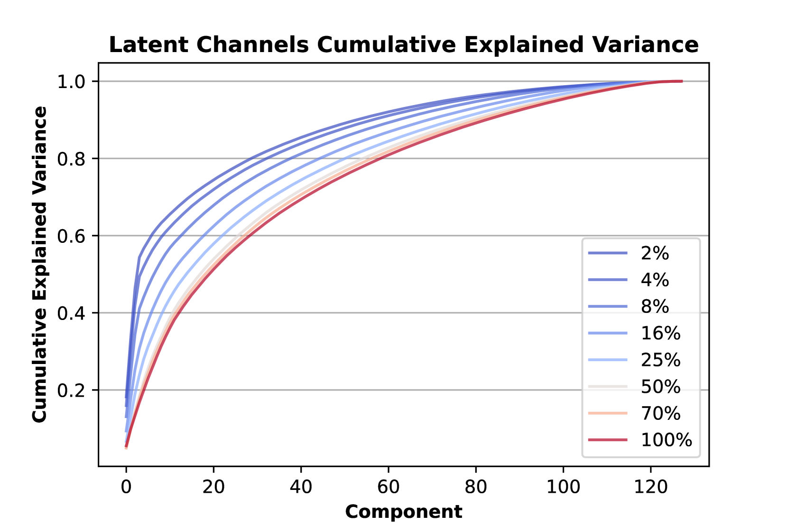
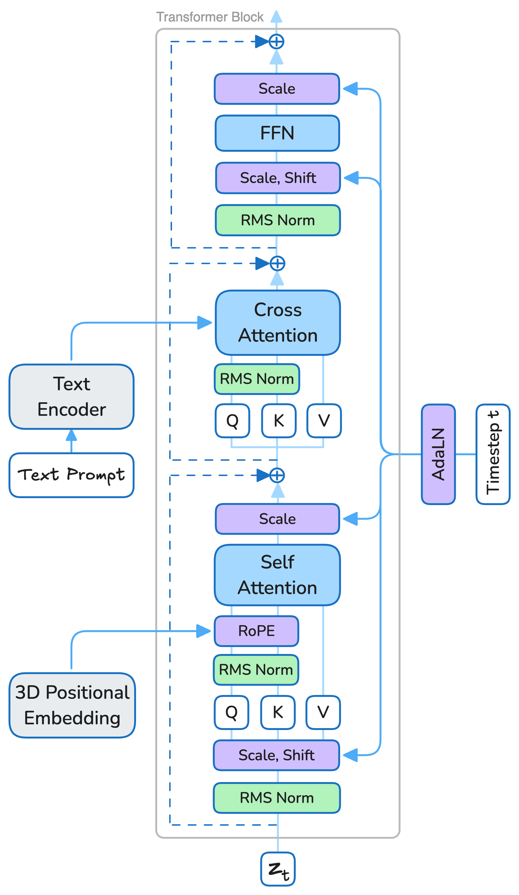

📌 论文概要
本笔记覆盖 Lightricks 的两代视频生成模型：
| 模型 | arXiv | 参数 | 核心特点 |
|---|
| LTX-Video | 2501.00103 | ~2B | 实时视频生成，5s 768×512@24fps 仅需 2s (H100) |
| LTX-2 | 2601.03233 | 14B+5B | 首个开源 DiT 音视频联合基础模型，同步音视频生成 |
演进关键：LTX-Video 是纯视频模型，主打超快推理速度。LTX-2 升级为音视频联合模型，14B 视频流 + 5B 音频流，支持原生 4K@50fps + 同步音频。LTX-2 已在 GitHub Lightricks/LTX-2 发布。
🏗️ 模型架构（深入）
LTX-Video: VAE-DiT 联合优化

Figure 2: LTX-Video 整体去噪策略 — latent-to-latent 扩散去噪步骤 + 最终 latent-to-pixels 去噪步骤。VAE 解码器兼任最后一步去噪。

Figure 6: LTX-Video 3D Transformer Block 架构。基于 Pixart-α，使用 RMSNorm、QK-normalization 和 RoPE 位置编码。
LTX-Video 的核心创新是不将 Video-VAE 和去噪 Transformer 视为独立组件，而是联合优化它们的交互：
| 组件 | 设计 | 创新点 |
|---|
| Video-VAE | 压缩率 1:192，时空下采样 32×32×8 像素/token | Patchify 从 Transformer 输入移到 VAE 输入 |
| DiT Transformer | 全时空自注意力 | 在高压缩潜空间做 full attention |
| VAE Decoder | 潜空间→像素 + 最后一步去噪 | 解码器兼任去噪，保留细节无需额外上采样 |
关键设计逻辑：高压缩率 (1:192) 让 Transformer 可以做全时空自注意力（计算量可控），但高压缩会丢失细节。解决方案：让 VAE 解码器同时负责最后一步去噪，直接在像素空间输出干净结果，避免额外上采样模块。
LTX-2: 非对称双流 Transformer
LTX-2 从纯视频模型升级为音视频联合基础模型：
| 组件 | 参数 | 设计 |
|---|
| 视频流 | 14B | 主 Transformer，负责视频生成 |
| 音频流 | 5B | 辅助 Transformer，负责音频生成 |
| 耦合方式 | - | 双向 Audio-Video Cross-Attention + 时间位置嵌入 |
| 共享条件 | - | Cross-modality AdaLN 共享时间步条件 |
非对称设计的理由
- 视频生成比音频生成更复杂，需要更多容量
- 14B : 5B 的比例分配反映了两者的建模难度差异
- 双向 cross-attention 确保音视频在内容/时间上对齐
文本编码与控制
- 多语言文本编码器：支持更广泛的语言理解
- Modality-Aware CFG (modality-CFG)：模态感知的无分类器引导，改善音视频对齐和可控性
🔑 关键特性
LTX-Video
- 超实时生成：5 秒 768×512@24fps 视频仅需 2 秒 (H100)，比实时更快
- 极高压缩率：1:192 压缩率，32×32×8 像素/token，在同类模型中领先
- 统一训练：T2V 和 I2V 同时训练，两种能力兼有
- ComfyUI 集成：核心支持 ComfyUI 工作流
LTX-2
- 音视频同步生成：单一模型一次性生成视频 + 同步音频
- 4K@50fps：支持原生 4K 分辨率、50fps 高帧率
- 丰富音频：不止语音，还包含背景声、拟音 (foley)、环境音
- 多关键帧条件：支持多关键帧条件控制
- IC-LoRA 控制模型：精确生成控制
- 标准 LoRA：风格定制
- Latent Upsampler：多尺度生成流水线
- 训练工具：提供 LoRA 训练能力 (LTX-Video-Trainer)
- 全面文档：https://docs.ltx.video
🔬 技术细节
1:192 压缩率的意义
传统视频 VAE 压缩率通常在 1:16 ~ 1:64 范围。LTX-Video 的 1:192 (时空 32×32×8) 是极高的压缩率：
- 优势：Transformer 在潜空间做 full attention 的计算量大幅降低，不需要稀疏注意力或窗口注意力
- 代价：高压缩率丢失细节
- 补偿：VAE 解码器做最后一步去噪，在像素空间恢复细节
与其他模型的压缩率对比
| 模型 | VAE 压缩率 | 注意力策略 |
|---|
| LTX-Video | 1:192 (32×32×8) | Full spatiotemporal attention |
| HunyuanVideo 1.5 | ~1:64 (典型) | SSTA (选择性 + 滑动窗口) |
| Wan2.1 | Wan-VAE (1:16~1:32) | 窗口/稀疏注意力 |
从 LTX-Video 到 LTX-2 的架构演进
- 参数量：~2B → 14B+5B (19B total)，大幅扩容
- 模态：纯视频 → 音视频联合
- 分辨率：768×512 → 4K 原生
- 帧率：24fps → 50fps
- 音频能力：无 → 语音 + 背景 + 拟音
- 控制方式：基础 T2V/I2V → 多关键帧 + IC-LoRA + LoRA + Latent Upsampler
📊 基准表现
LTX-Video
- 在相似规模模型中推理速度最快（超实时）
- H100 上 2 秒生成 5 秒视频，在开源 2B 级别模型中领先
LTX-2
- 开源系统中 SOTA 的音视频质量和提示对齐
- 结果可与闭源模型媲美，计算成本和推理时间仅为后者的一小部分
- 作为评估对象被多篇论文引用（如 CultureScore、FlowBlending、ParetoSlider）
LTX-2 在生态中的定位：首个开源 DiT 音视频联合基础模型。与 Wan-Streamer (阿里端到端实时交互) 不同，LTX-2 侧重于高质量音视频内容生成而非实时交互。与 Cosmos 3 (NVIDIA 全模态) 相比，LTX-2 更专注于音视频双模态。
💡 个人分析
- 压缩率创新的启示：LTX-Video 的 1:192 压缩率 + VAE 解码器去噪是一个优雅设计。它避开了一个核心矛盾——要么用高压缩率但丢失细节，要么用低压缩率但注意力计算量大。LTX-Video 两全其美
- 音视频联合是趋势：LTX-2 (2026-01) 和 Wan-Streamer (2026-06) 都在做音视频联合生成，说明这是视频生成模型的明确演进方向。LTX-2 的非对称双流设计 (14B:5B) 为音视频比例分配提供了参考
- 4K@50fps 的突破：LTX-2 支持原生 4K 分辨率和 50fps 帧率，这在开源模型中是领先的。多数开源视频模型仍停留在 720P@24fps
- 从 2B 到 19B：LTX 系列的参数跨度极大——LTX-Video ~2B、LTX-2 19B。说明 Lightricks 在探索从轻量到旗舰的全谱系
- Modality-CFG：模态感知的无分类器引导是一个有趣创新，解决音视频联合生成中不同模态的引导强度问题
- 工程生态：ComfyUI 集成、LoRA 训练器、IC-LoRA 控制模型、Latent Upsampler——LTX 的工程生态非常完整
- 与 HunyuanVideo 1.5 的对比：LTX-Video (2B) 比 HunyuanVideo 1.5 (8.3B) 更轻量、更快，但质量和能力维度可能不如后者。LTX-2 (19B) 则比 HunyuanVideo 1.5 更大且多了音频
- LTX-2.3 不存在：截至调研日期，arXiv 和 GitHub 上没有 "LTX-2.3" 这个版本号。LTX 系列为 LTX-Video → LTX-2
📐 算法框图
LTX-Video 架构：2B 参数，超实时视频生成，DiT + 高效 VAE
LTX-Video Pipeline：
- 文本编码：文本编码器提取 prompt 特征
- 视频 VAE：高效 3D VAE，高压缩率
- DiT 主干：轻量 Diffusion Transformer
- 实时推理：生成速度 >1x 实时（比播放还快）
LTX-2 架构：19B 参数，双流 DiT（Dual-Stream DiT），首个开源音视频联合生成
LTX-2 Pipeline：
- 双流 DiT：视频流和音频流并行生成，通过 cross-attention 交互
- 4K@50fps：支持 4K 分辨率 50 帧输出
- 音视频同步：原生音视频联合生成，无需后处理对齐
💡 核心创新点
创新 1：超实时生成 (LTX-Video) — 2B 模型生成速度超过 1x 实时，比播放还快，实现真正的实时交互。
创新 2：首个开源音视频联合生成 (LTX-2) — 双流 DiT 架构，视频和音频原生同步生成，首个开源方案。
创新 3：4K@50fps (LTX-2) — 开源模型中首个支持 4K 50帧输出的。
创新 4：双流 DiT (LTX-2) — 视频流和音频流独立处理但通过 cross-attention 同步，比单流更高效。
🎯 应用场景
| 场景 | 具体应用 |
|---|
| 实时交互 | LTX-Video 超实时，适合对话式视频生成 |
| 影视制作 | LTX-2 4K 输出，达到制作级质量 |
| 音视频创作 | LTX-2 原生音视频联合生成，无需分开制作 |
| 移动端 | LTX-Video 2B 轻量，适合移动部署 |
| 游戏资产生成 | 快速生成游戏过场动画 |
🏋️ 训练策略
LTX-Video
- 轻量 DiT 设计，2B 参数优化实时推理
- 高效 VAE 压缩，减少 latent 空间维度
- 渐进式分辨率训练
LTX-2
- 19B 参数，双流 DiT 架构
- 视频流和音频流分别预训练，再联合微调
- 大规模音视频配对数据训练
- 4K 高分辨率后训练
📊 数据集构建
- LTX-Video：大规模图像/视频文本对
- LTX-2：音视频配对数据，4K 高分辨率数据
- 数据清洗：质量评分 + 运动过滤 + 安全过滤
📐 损失函数
- 视频 Flow Matching：L_video = E || v_θ^v(z_t^v, t, c) - v^v ||²
- 音频 Flow Matching (LTX-2)：L_audio = E || v_θ^a(z_t^a, t, c) - v^a ||²
- 联合损失：L = L_video + λ·L_audio
- 同步损失：音视频对齐的辅助损失
关键设计：双流 DiT 的核心是视频和音频各自有独立的去噪路径，通过 cross-attention 共享信息。这比将音频 token 拼接到视频 token 序列更高效，避免了序列长度爆炸。
🔄 技术路线对比与演进
| 维度 | LTX-Video | LTX-2 | Wan2.2 | Veo 3.1† |
|---|
| 参数量 | 2B | 19B | 14B | 闭源 |
| 速度 | 超实时 | 标准 | 标准 | 标准 |
| 分辨率 | 720p | 4K@50fps | 720p | 4K |
| 音频 | ❌ | ✅ 原生 | ❌ | ✅ 原生 |
| 开源 | ✅ | ✅ | ✅ | ❌ |
趋势：LTX 走了与 Wan/HunyuanVideo 不同的路线——先用极小模型 (2B) 实现超实时，再用双流架构 (19B) 实现音视频联合。双流 DiT 是首个开源的音视频联合生成方案，填补了 Veo 3 闭源留下的空白。